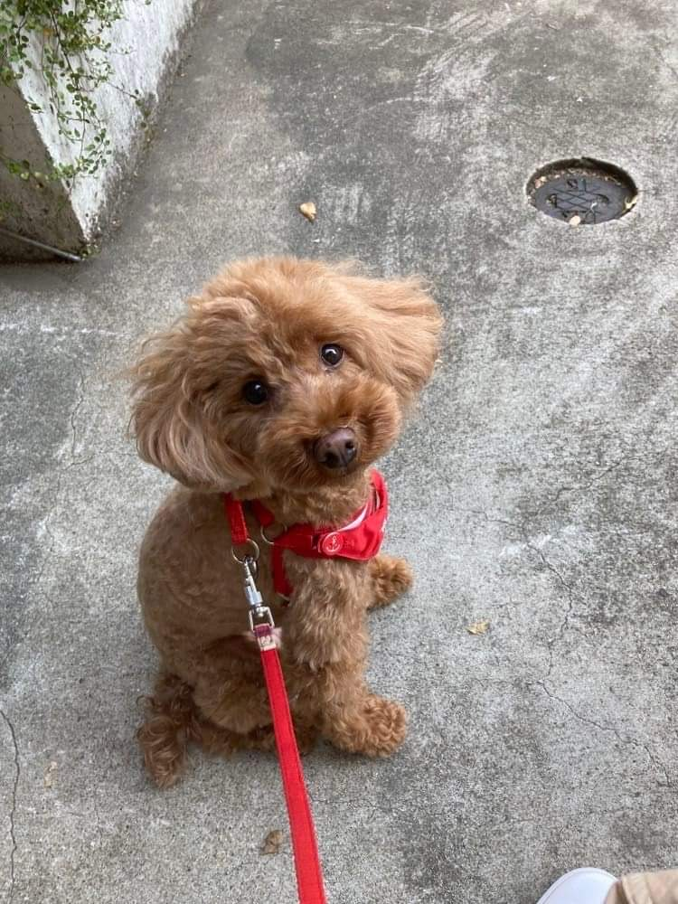
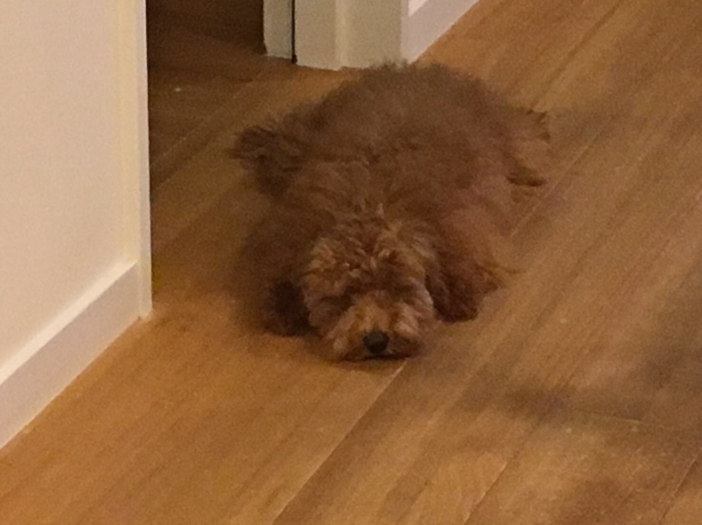

Ruu
Ruu is a 6yr old toy poodle. She loves taking a nap by the balcony door in sunlight even if it is 100 degrees outside. She loves going outside for a moment but stops moving in the middle of a walk, and her owner ends up carrying her back home.
Photo Gallery
Likes
- Naps
- Rice - like a true pet dog in Japanese household
- Mom's blanket